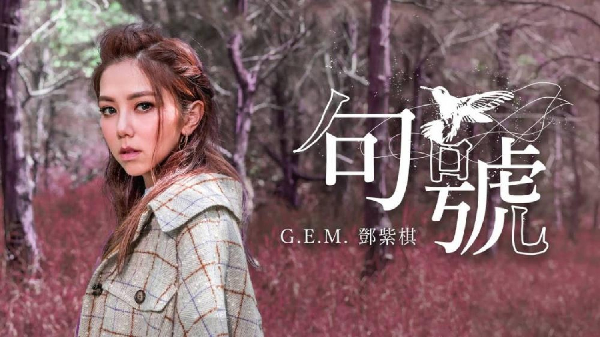

鄧紫棋
歌手介紹
名字:鄧紫棋 G.E.M.
生日:1991年8月16日
代表作品:
《泡沫》（2012年)
《再見》（2015年）
《光年之外》（2016年）
《倒數》（2018年）
《句號》（2019年）
宗教信仰:基督教
演奏樂器:聲樂、鋼琴、吉他、爵士鼓
2018年-鄧紫棋擔任馬來西亞飢餓30愛心大使。
鄧紫棋-句號

歌曲介紹
這首歌鼓勵了我
讓我明白很多決定都需要勇氣
有一些往事雖然美好
有一些路走過之後卻不能夠回頭
最終必須拿出一個勇氣
畫上一個句號。
歌詞
可惜我們終於來到 一個句號
窗外不願飛的蜂鳥 也在哀悼
城市再也不會聽到 我們爭吵
你會不會少了一點煩惱
回到十二年前 回憶就在眼前
你帶著帽子 而我樣子 帶著靦腆
不過第一次的見面 你說
你有先見 我的先天 被訓練過 我能有片天
我當時天真 寡見鮮聞
不像成年人 有能力辨認
不是為了賺了有錢分 我為我的前程
希望我寫的歌裡面有更好的和弦聲
時針滴滴答 你還記得嗎
說句心裡話 你還懷念嗎
第一次發唱片 就一馬當先
從此在大場面 我不再站旁邊
我是真的感謝 佩服你的眼界
怎麼想到和你是帶著刺痛地完結
你看著一朵花慢慢萌芽
我卻看著你意氣慢慢風發
慾望聚沙成塔 價值慢慢分岔
太多失望讓我對你的信任慢慢崩塌
可惜我們終於來到 一個句號
窗外不願飛的蜂鳥 也在哀悼
城市再也不會聽到 我們爭吵
你會不會少了一點煩惱
時針滴滴答 你還記得嗎
說句心裡話 你還懷念嗎
你說我是個商品 沒有你我就不可以
這些扭曲的真理 差點毁掉我的自信
如今的我已覺醒 如今我不再哭泣
再不怕堅持自己 做你沒做對的決定
你知道嗎 這一輩子除了我的爸爸
你曾是我最信任的男人吧
但空白的娃娃 總會慢慢⻑大
抱歉我沒法永遠當你聽話的傻瓜
可惜我們終於來到 一個句號
窗外不願飛的蜂鳥 也在哀悼
城市再也不會聽到 我們爭吵
你會不會少了一點煩惱
多少年裡 多少遍你 多少錯卻沒多少歉意
但過去了就不再介意 把珍貴的放心裡
把痛的傷的全都忘記 我⻘春的全部回憶
那愛的恨的全都是你 希望你偶爾也會想起
就讓我真心真意 把歌唱完重新開始
時針滴滴答 你還記得嗎
說句心裡話 你還懷念嗎